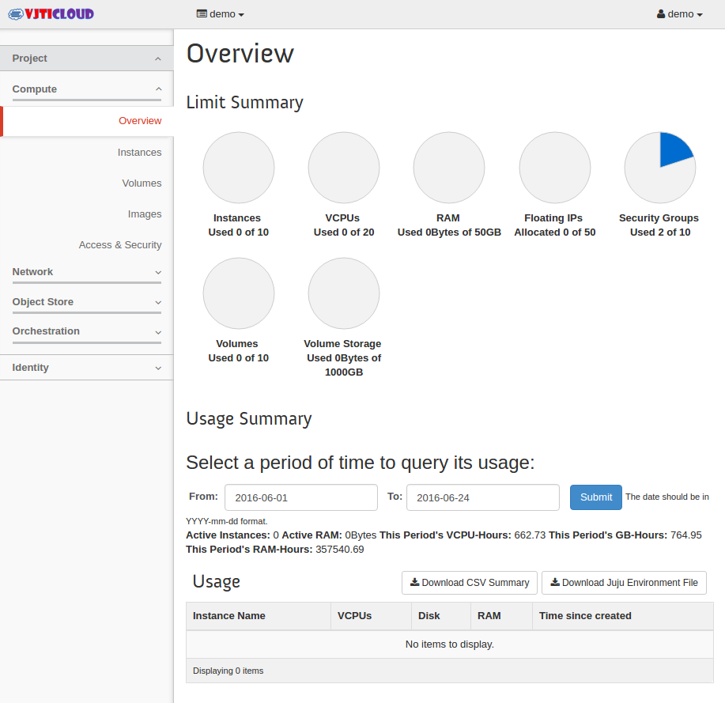
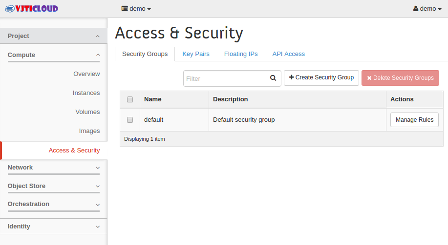
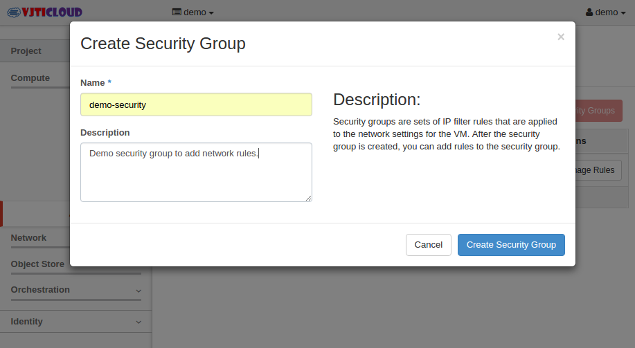

Launch an instance¶
Create the Network security group & Configure the Rules¶
Login to Openstack Dashboard as normal user (demo).
Navigate to Access & Security . Select the tab called “Security Groups”.
Click on “Create Security group”. Enter the name and description for the security group.
Once the group has been created successfully, Click on “Manage Rules”.
Click on “Add Rule”.
Allow ssh from anywhere to the instances (SSH).
Similarly , allow “ping” as well to this host from anywhere (ALL ICMP).
Create the key-pair to access the instance¶
- Login to Openstack Dashboard.
- Navigate to security & access. Click the tab called “Key Pairs” and click on “Create key Pair”.
- Enter the Key pair name. (Keep Some meaning full name). Click on “Create key Pair”.
- The key pair will be automatically downloaded to your laptop. If it didn’t download, click the link to download it. Keep the key safe since you can’t download it again.
Launch the New Openstack Instance¶
Login to Openstack Dashboard.
Click on “Launch Instance ” tab.
Select the instance details like below.
Availability Zone – nova . (Need to select your compute node). In our case control node & compute nodes are same.
Instance Name – Enter the desired instance name
Flavour – Select the available flavour according to your need. (See the details in right side)
Instance Count – Enter the instance Count
Boot Source – Select boot from pre-defined image.
Image Name – select “cirros” since its very small Linux foot print for testing openstack.
Click on Access & security tab for the instance. From the drop down box, select the key pair “UAPAIR” which we have created earlier. Also select the security group which we have created. Click “Launch” to launch the new instance.
Here you can see that instance has been launched. It will take few seconds/minutes to boot the instance depends on the image size which we have selected.